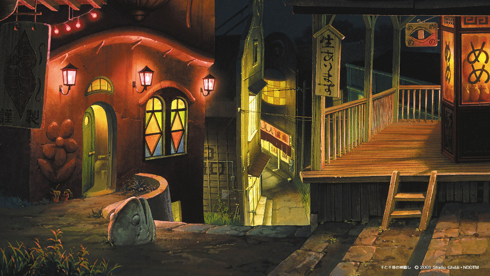
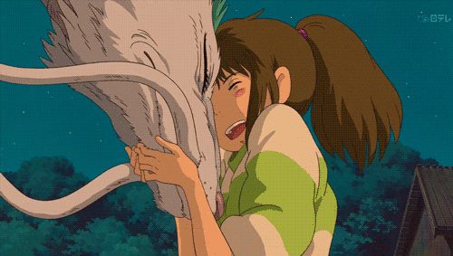

Spirited Away (Japanese: 千と千尋の神隠し, Hepburn: Sen to Chihiro no Kamikakushi, 'Sen and Chihiro's Spiriting Away')
Spirited Away (Japanese: 千と千尋の神隠し, Hepburn: Sen to Chihiro no Kamikakushi, 'Sen and Chihiro's Spiriting Away')
Spirited Away (Japanese: 千と千尋の神隠し, Hepburn: Sen to Chihiro no Kamikakushi, 'Sen and Chihiro's Spiriting Away') is a 2001 Japanese animated fantasy film written and directed by Hayao Miyazaki, animated by Studio Ghibli for Tokuma Shoten, Nippon Television Network, Dentsu, Buena Vista Home Entertainment, Tohokushinsha Film, and Mitsubishi. The film stars Rumi Hiiragi, Miyu Irino, Mari Natsuki, Takeshi Naito, Yasuko Sawaguchi, Tsunehiko Kamijō, Takehiko Ono, and Bunta Sugawara. Spirited Away tells the story of Chihiro Ogino (Hiiragi), a 10-year-old girl who, while moving to a new neighbourhood, enters the world of Kami (spirits of Japanese Shinto folklore). After her parents are turned into pigs by the witch Yubaba(Natsuki), Chihiro takes a job working in Yubaba's bathhouse to find a way to free herself and her parents and return to the human world. Miyazaki wrote the script after he decided the film would be based on the 10-year-old daughter of his friend Seiji Okuda, the movie's associate producer, who came to visit his house each summer. At the time, Miyazaki was developing two personal projects, but they were rejected. With a budget of US$19 million, production of Spirited Away began in 2000. Pixar animator John Lasseter, a fan and friend of Miyazaki, convinced Walt Disney Pictures to buy the film's North American distribution rights, and served as executive producer of its English-dubbed version. Lasseter then hired Kirk Wise as director and Donald W. Ernst as producer, while screenwriters Cindy and Donald Hewitt wrote the English-language dialogue to match the characters' original Japanese-language lip movements. Originally released in Japan on 20 July 2001 by distributor Toho, the film received universal acclaim, grossing $395.8 million at the worldwide box office. It is frequently considered one of the best films of the 21st century as well as one of the greatest animated films ever made. Accordingly, it became the most successful and highest-grossing film in Japanese history with a total of ¥31.68 billion ($305 million). It held the record for 19 years until it was surpassed by Demon Slayer: Kimetsu no Yaiba the Movie: Mugen Train in 2020.
It won the Academy Award for Best Animated Feature at the 75th Academy Awards, making it the first and only hand-drawn and non-English-language animated film to win the award. It was the co-recipient of the Golden Bear at the 2002 Berlin International Film Festival (shared with Bloody Sunday), and is in the top 10 on the British Film Institute's list of "Top 50 films for children up to the age of 14". In 2016, it was voted the 4th-best film of the 21st century by the BBC, as picked by 177 film critics from around the world, making it the highest-ranking animated film on the list. In 2017, it was also named the second "Best Film...of the 21st Century So Far" by The New York Times.
